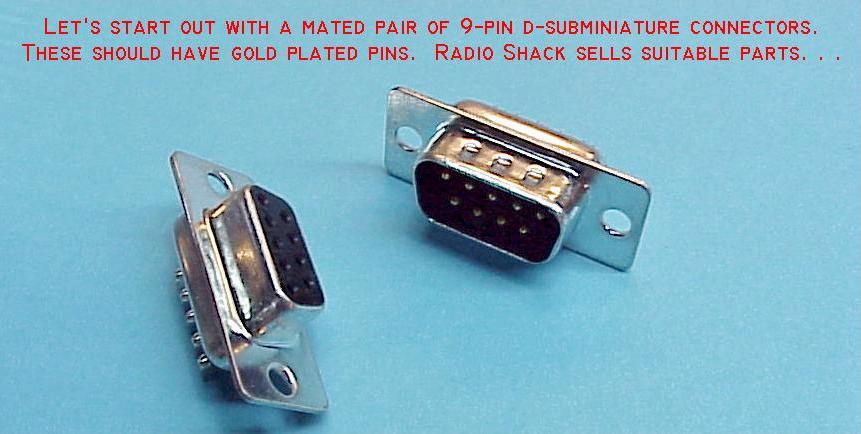
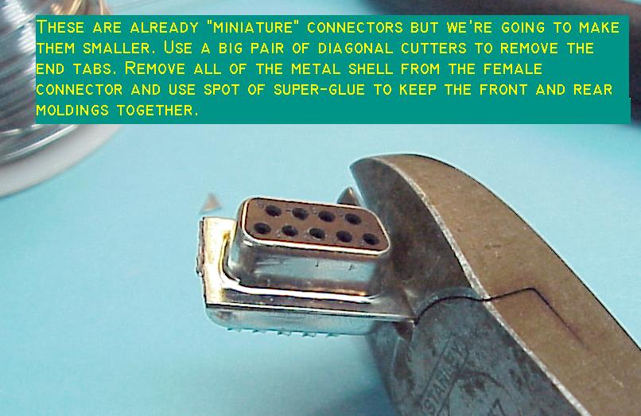
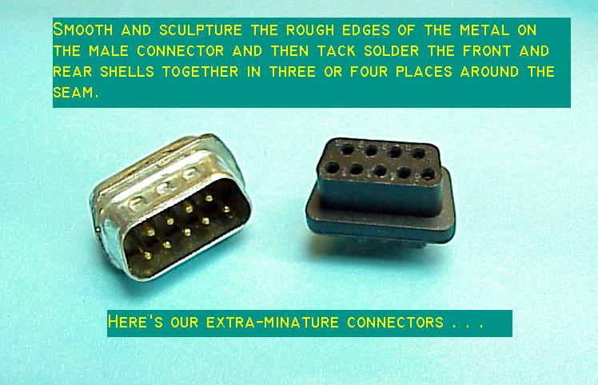
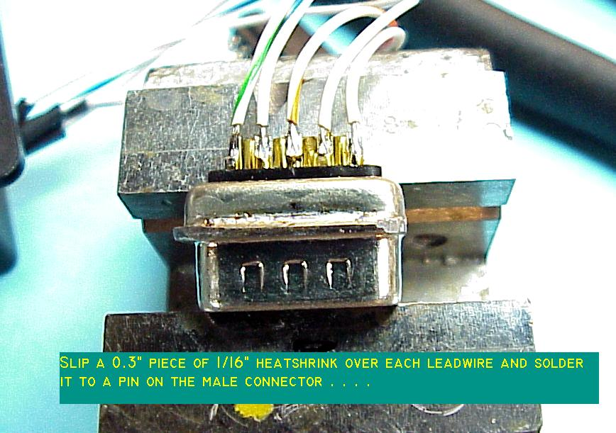
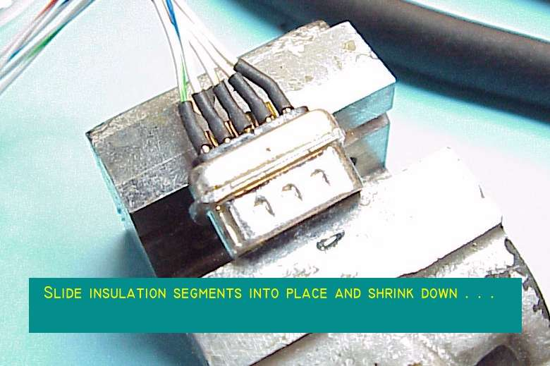
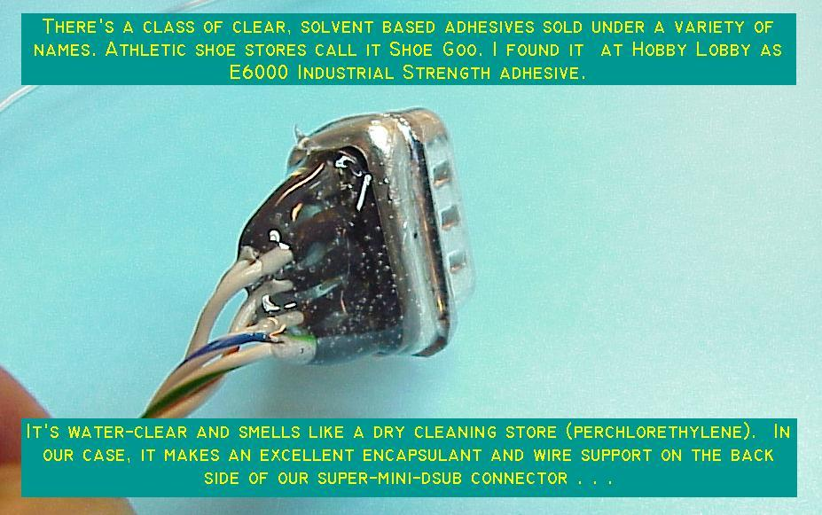
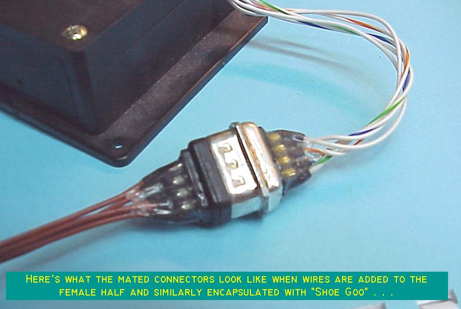
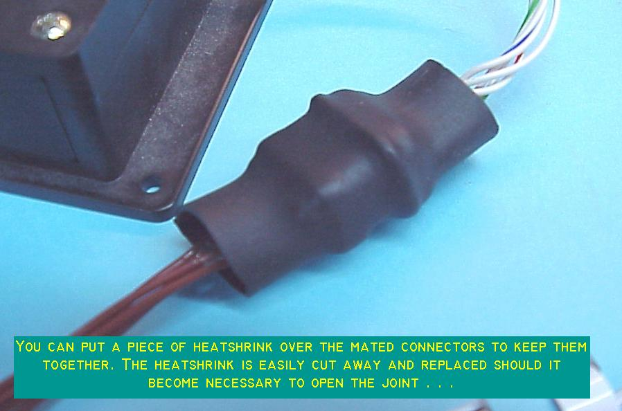

AeroElectric Connection
A "Little Connector" Solution for MAC servos . . .
Several times a year, someone asks about ways to deal effectively with the small bundle of wires that come out of a MAC trim servo. The wires are pretty small. Further, there are no quality, miniature connectors readily available to the owner built aircraft market. Soooo . . . here's my suggestion for and easy low cost way to put a reasonably sized, quality connector in the MAC trim servo harness . . . .
I don't hang out on as many list servers as in times past so if you think this is a good idea, be sure to tell others about it and where you found it.








Use your browswer's arrow to return to
the articles index . . . |